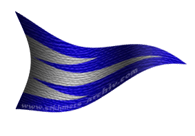
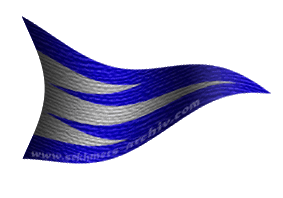

| Übersicht,
Anschläge und Stammtisch (RPG) |
|
Wer kennt meine Eltern?
|
Demeter
   |
*Eine Halblingsdame geht zum Anschlagsbrett, verharrt etwas, liest ein paar Anschläge, schüttelt den Kopf und hängt dann selber einen Zettel auf*
Werte Scherbenbewohner,
ich habe mich verlobt und das hat in mir neuerlich den Wunsch geweckt, meine Eltern kennenzulernen, bzw. wiederzufinden.
Vielleicht hat ja jemand was von Ihnen gehört oder kennt jemand, der seine Tochter vermißt.
Ich kann mich nicht mehr an sie erinnern ... als ich verlorenging oder weggegeben wurde, war ich noch klein, ein Baby. Nun gar groß bin ich jetzt auch nicht, aber doch ein wenig älter. :-) Ich bin Mitte der 20, rothaarig und .... ? Ach seht Euch einfach mein Bild an.
Aufgezogen wurde ich von Handwerkersleuten, die mir viel Liebe gaben, aber nichts von meinen Eltern wußten. Sie fanden mich eines Tages auf der Schwelle ihres Handwerksbetriebes.
Sollte jemand etwas von meinen Eltern wissen oder jemand meinen, ich wäre die richtige, so habe ich noch ein kleines Andenken, dass in meiner Kleidung steckte als man mich fand.
Ich bin für jeden Hinweis dankbar, sei es hier oder per Schwalbe.
*Sie verläßt das Anschlagsbrett, nicht ohne nocheinmal ihren Zettel durchgelesen zu haben.
Demeter,
Verlobte des ehrenwerten ollibolli
Zur 18. Stunde am 61.Erntemond im Jahre 421 |
01.09.05 10:09
 |
|
Die Elfe
|
Da war diese Frau, sie sah Euch sehr ähnlich, ich habe sie dem Elfen geopfert.
Die Elfe |
01.09.05 10:18
|
|
| Níniel Silwen (RIP) |
Ich kann mich dunkel daran erinnern, dass nach einer rothaarigen Halblingsfrau gesucht wurde...
Nun, ich werde dem nachgehen, mich alsbald bei Euch melden...
Lady Níniel Silwen,
iell en Tári en noss Alkatar
Zur 20. Stunde am 61.Erntemond im Jahre 421 |
01.09.05 10:36
|
|
| Níniel Silwen (RIP) |
sucht eine Weile die Anschläge durch, bevor sie erneut einen schreibt
Ich mag keine falschen Hoffnungen erwecken, doch habt ihr ein Muttermal in Form eines Herzens? Sind Eure, verzeiht die äußerst intime Frage, Eure Ohrläppchen angewachsen?
Wenn dies zutreffen sollte, könnte dies eure Suche beenden...
heftet ein Aktenzeichen der Wichtel darunter, die jede Anschläge sorgfälig prüfen und zuordnen*
Lady Níniel Silwen,
iell en Tári en noss Alkatar
Zur 20. Stunde am 61.Erntemond im Jahre 421 |
01.09.05 10:44
|
|
| Níniel Silwen (RIP) |
http://www.scherbenwelten.de/kommnew.php?css=&kategorie=2&beitrag=65055
Lady Níniel Silwen,
iell en Tári en noss Alkatar
Zur 20. Stunde am 61.Erntemond im Jahre 421 |
01.09.05 10:44
|
|
| Narndil Biunda v. Tacheless (RIP) |
*spuckt aus als sie den Zettel der Elfe liest*
Irgendwann begegnet Ihr dem falschen, und dann werdet Ihr es sein die ihr Leben aushaucht...
Werte Demeter,
ich weiss wie es ist ohne Eltern aufzuwachsen. Doch gebt die Hoffnung nicht auf Eure Eltern zu finden. Fand ich doch selber vor kurzem meinen Grossvater wieder.
Narndil Biunda,
Hohepriesterin im Dienste des einzig wahren Glaubens an Pheron,
Ehefrau des ehrenwerten Schachermüller,
Heldin des Orkensturms
Zur 21. Stunde am 61.Erntemond im Jahre 421 |
01.09.05 10:46
|
|
| Níniel Silwen (RIP) |
erschrickt, beruhigt sich dennoch schnell wieder, als sie den Anschlag bemerkt, den sie überlesen hatte
werte Narndil Biunda,
wie könnt ihr mich derart erschrecken... Elfe ist nicht gleich Elfe verlässt erleichtert das Brett
Lady Níniel Silwen,
iell en Tári en noss Alkatar
Zur 21. Stunde am 61.Erntemond im Jahre 421 |
01.09.05 10:50
|
|
| Narndil Biunda v. Tacheless (RIP) |
Verzeiht Niniel nicht Euch meine ich *lächelt* sonder die abscheuliche Schergin der Absieben.
Narndil Biunda,
Hohepriesterin im Dienste des einzig wahren Glaubens an Pheron,
Ehefrau des ehrenwerten Schachermüller,
Heldin des Orkensturms
Zur 21. Stunde am 61.Erntemond im Jahre 421 |
01.09.05 10:57
|
|
| Narndil Biunda v. Tacheless (RIP) |
((Sorry ist noch zu früh... natürlich sollte es ´werte Niniel Silwen..´ heissen))
Narndil Biunda,
Hohepriesterin im Dienste des einzig wahren Glaubens an Pheron,
Ehefrau des ehrenwerten Schachermüller,
Heldin des Orkensturms
Zur 21. Stunde am 61.Erntemond im Jahre 421 |
01.09.05 10:58
|
|
Demeter
|
*steht am Anschlagsbrett mit Tränen in den Augen, packt den Zettel von Die Elfe, zerknüllt ihn und wirft ihn in den Dreck. Hüpft darauf herum und zermatscht ihn, bis er total unleserlich ist.*
*Geht dann davon, den Kopf gesenkt, die Schultern bebend, ohne anscheinend die anderen Notizen gelesen zu haben.*
Demeter,
Verlobte des ehrenwerten ollibolli
Zur 24. Stunde am 61.Erntemond im Jahre 421 |
01.09.05 11:31
|
|
| Níniel Silwen (RIP) |
Narndil Biunda, es ist übel das sich eine der Absieben mit einer Rasse benennt - es war nur ein kurzer Schreck
((kein Problem))
sieht Demeter zu, hält sie jedoch fest, als sie sich zum gehen wendet...
Werte Dame...nicht so schnell - lest ALLES
Lady Níniel Silwen,
iell en Tári en noss Alkatar
Zur 1. Stunde am 62.Erntemond im Jahre 421 |
01.09.05 11:50
|
|
| Angela Cada von Gondolin (RIP) |
*sie geht ans Anschlagsbrett, sieht sich ein paar dinge durch, bleibt dann hier hängen. liest den Anschlag, ließ ihn ein zweites und ein Drittes mal.
dann schreibt sie einen neuen zettel darunter:*
Werte Demeter,
was für ein Andenken habt ihr denn bekommen ?
gez.
Angela Cada von Gondolin
Baronesse Angela Cada von Gondolin,
Vorsteherin von Patria Anatini,
Anführerin der glorreichen Nation "Clan Mc Duck",
Ehefrau des ehrenwerten Magicus von Gondolin
Zur 3. Stunde am 62.Erntemond im Jahre 421 |
01.09.05 12:10
|
|
| Níniel Silwen (RIP) |
beocachet das Erscheinen der Baronesse und lächelt zufrieden und voller Hoffnung
Lady Níniel Silwen,
iell en Tári en noss Alkatar
Zur 3. Stunde am 62.Erntemond im Jahre 421 |
01.09.05 12:18
|
|
| BlueFingers (RIP) |
Während meiner Kindheit in Schnibbeldiwib - einem kleinen Dorf, das auf keiner Karte verzeichnet ist - lernte ich einige Halblingspaare kennen.
Ich erinnere mich an ein sehr junges Paar, nicht sehr wohlhabend.. Sie waren immer traurig und ich hörte einmal wie der Mann zu seiner Frau etwas sagte, das wie "sie wird es dort sicher besser haben.." klang. Ich habe mich immer gefragt, was er wohl meinte.
Wo seid Ihr denn aufgewachsen?
Markgräfin BlueFingers,
Vorsteherin von Skryll,
Anführerin der glorreichen Nation "Reich Narvalon"
Zur 7. Stunde am 62.Erntemond im Jahre 421 |
01.09.05 13:14
|
|
| DeLaCroix (RIP) |
In Lager Nord, bei Klaudia und Karl-Heinz DeLaCroix...
Sir DeLaCroix,
Anführer der glorreichen Nation "Eukalyptische Taugenichtse",
Tabakkenner der Taugenichtse
Zur 8. Stunde am 62.Erntemond im Jahre 421 |
01.09.05 13:21
|
|
| Bratislav Gonzales (RIP) |
Ich könnte Euch adoptieren.
Dann kriegt Ihr auch gleich noch einen Nachnamen dazu.
Bratislav Gonzales,
Kardinal im Dienste des einzig wahren Glaubens an Bendur
Zur 20. Stunde am 62.Erntemond im Jahre 421 |
01.09.05 16:10
|
|
| Marduc (RIP) |
Ich wünsche Euch viel Erfolg bei Eurer Suche, Demeter.
Freiherr Marduc,
Vorsteher von Ganath Nova,
Superminister für alle Angelegenheiten,
Verlobter der reizenden Gabria von Corin
Zur 11. Stunde am 63.Erntemond im Jahre 421 |
01.09.05 19:48
|
|
| Brendan (RIP) |
Möglicherweise war deine Mutter eine Hafendirne und ein heruntergekommener Seemann ist dein Vater.
Freiherr Brendan,
Anführer der glorreichen Nation "Bruderschaft der Kaperfahrer"
Zur 12. Stunde am 63.Erntemond im Jahre 421 |
01.09.05 19:51
|
|
| Glorfindel von Gondolin (RIP) |
Vorsicht Brendan... nicht das Sie die Alimente der letzten Jahre einfordert...
Graf Glorfindel von Gondolin,
Vorsteher von Albiontar
Zur 2. Stunde am 64.Erntemond im Jahre 421 |
01.09.05 23:14
|
|
| Fiorel Quelleloss (RIP) |
hmmm ich dachte ein herzchen an ehrziger stelle und nich ein purpurnes am A ....
Sir Rannug Mc Duck
Zur 9. Stunde am 64.Erntemond im Jahre 421 |
02.09.05 0:48
|
|
Demeter
|
*bleibt stehen, dreht sich zögernd um und geht zum Anschlagsbrett zurück. Liest die Anschläge weiter durch, der Gesichtsausdruck schwankt zwischen Lachen und Weinen, zwischen Hoffnung und erwarteter Enttäuschung. Faßt sich gedankenverloren an ihre Ohrläppchen. Ihre Hände zittern.
Sollte es wirklich sein? So schnell? *
*Murmelt vor sich hin* nein, ich bin in Kuddeldaddeldu aufgewachsen, meine Zieheltern sind tot. Nur ein Amulett ist mir geblieben, ein Amulett an einem Band....
*Wischt sich übers Gesicht und verläßt eiligen Schrittes das Anschlagsbrett
Demeter,
Verlobte des ehrenwerten ollibolli
Zur 4. Stunde am 66.Erntemond im Jahre 421 |
02.09.05 10:59
|
|
Übersicht,
Anschläge und Stammtisch (RPG)
|